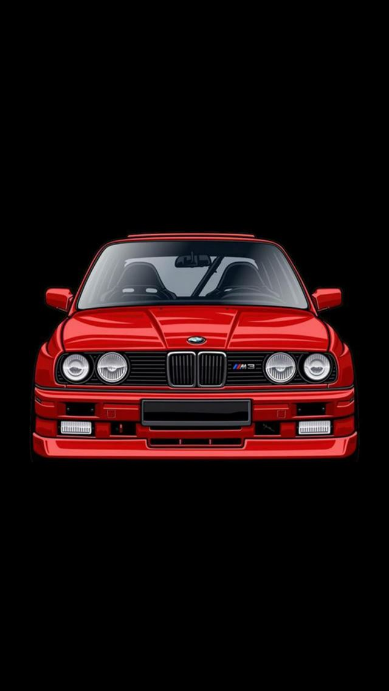

BMW (Bayerische Motoren Werke AG) ir Vācijas uzņēmums, kas ražo automobiļus, motociklus, velosipēdus un dzinējus, un ir dibināta 1916. gada 7. martā. BMW galvenā mītne atrodas Minhenē, Bavārijā, Vācijā. Kompānijai arī pieder un ražo Mini un Rolls Royce markas automašīnas. Uzņēmumam kopumā ir 25 rūpnīcas, 13 valstīs kā Vācija, Ķīna, Dienvidāfrika, ASV, Indija, Japāna, Kanāda, Lielbritānija, Austrija, Krievija, Indonēzija, Malaizija un Ēģipte.
BMW ir viena no trijām lielākajam Vācijas luksusa automašīnu ražotājām, šajā grupā ietilpst arī Audi un Mercedes-Benz.
BMW bija oficiālais sponsors Londonas 2012. gada vasaras olimpiskajās spēlēs, sniedzot atbalstu ar 4037 BMW un Mini markas automašīnām, riteņiem un motocikliem. BMW ir arī futbola kluba Frankfurtes "Eintracht" viens no galvenajiem sponsoriem.
Bmw tirzniecības centrs- Auto-BMW,AUDI,TESLA-drag race-ATGRIEZTIES